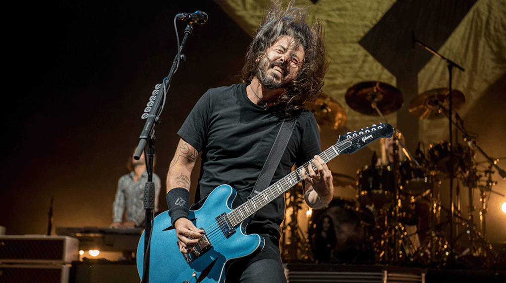

Fighters, acaba de anunciar su gira mundial para 2023. La gira incluirá fechas en Europa, América del Norte y Oceanía, y promete ser uno de los eventos más esperados del año en el mundo del rock

Foo Fighter anunció recientemente a través de sus redes la continuidad de la banda más allá de la muerte de Taylor Hawkins, ahora la banda confirmó varias fechas oficiales tras lo que fueron los conciertos tributos al fallecido baterista.
Dave Grohl, Nate Mendel, Pat Smear, Chris Shiflett y Rami Jaffee estarán en vivo en el Boston Calling 2023 que se celebrará en el fin de semana del 26-28 de mayo. Será la oportunidad para conocer quién será el nuevo baterista de la banda. Queen Of The Stone Age, Paramore, The National, King Gizzard & The Lizard Wizard y Bleachers también estarán en vivo en el festival.
El bajista de Pulp Steve Mackey murió a los 56 años

STEVE MACKEY, EL bajista de toda la vida de la banda Britpop Pulpa, ha muerto a la edad de 56 años.
La esposa de Mackey, Katie, anunció su muerte el jueves en las redes sociales, escribiendo que murió después de una hospitalización de tres meses. No se proporcionó causa de muerte.
“Después de tres meses en el hospital, luchando con todas sus fuerzas y determinación, estamos conmocionados y devastados por haber dicho adiós a mi brillante y hermoso esposo, Steve Mackey, ” que Katie escribió.